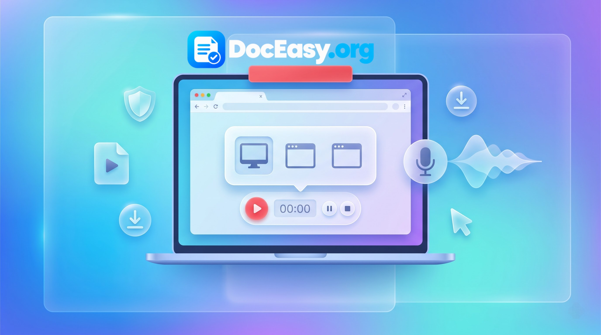

Free Online Screen Recorder with Audio
Record your desktop display, application window or browser tab with system audio and voice narration — 100% in your browser, private, zero installations.
Your Recording
🔒 Complete client-side privacy: All media frames are synthesized locally inside your browser engine. Zero data is uploaded to remote servers.
Free Online Screen Recorder with Audio — Record Your Desktop in HD Without Installing Anything
In today's digital workspace, screen recording has become an essential professional skill. Whether you're capturing a live software demo, recording a remote code review session, archiving a corporate webinar, creating an online course lecture, or documenting a reproducible software bug for your team, a reliable screen recorder saves hours of back-and-forth communication.
Traditional desktop solutions like OBS Studio, Camtasia and Snagit are powerful — but they demand hefty installs, GPU driver configurations, and administrative permissions. Cloud-based recorders lure you with convenience and then trap you with mandatory signups, 5-minute time limits, watermarks and unencrypted cloud uploads of your private screen.
The DocEasy Online Screen Recorder offers a third path: a lightweight, browser-based capture studio that records your entire desktop, any application window, or a single browser tab in high definition — with system audio and microphone, without installation, without signup, and with zero cloud uploads.

📷 [Demo Image: assets/images/screen-recorder-demo.jpg]How to Record Your Screen Online (Step-by-Step)
Recording a screen in your browser takes less than 30 seconds. Here's the complete workflow:
- Configure your audio sources. Tick System Audio if you need to capture internal sound (video calls, YouTube, game audio) and tick Microphone if you want to narrate over the recording.
- Click "Start Recording". The browser will show a native permission prompt asking what you want to share.
- Choose a capture surface. Select Entire Screen for full desktop, Window for a single application, or Chrome Tab for a single browser tab with tab audio.
- Record with pause support. The live timer shows elapsed recording time. Use Pause to skip transitions and Resume to continue in the same file.
- Stop and download. Click Stop or the operating system's floating "Stop Sharing" bar. Your WebM file is instantly ready for preview and download.
Why Choose a Browser-Based Screen Recorder?
Before comparing specific tools, it helps to understand the three main categories of screen recorders available today, and where browser-based tools like DocEasy stand out.
| Feature | DocEasy (Browser) | Desktop Apps (OBS, Camtasia) | Cloud Recorders (Loom, ScreenPal) |
|---|---|---|---|
| Installation required | ❌ None | ✅ Heavy install | ⚠️ Browser extension |
| Signup / account | ❌ No account | ❌ No account | ✅ Mandatory signup |
| Recording time limit | ✅ No limit (RAM only) | ✅ No limit | ❌ 5–15 min on free tier |
| Privacy — where is video stored? | ✅ Your device only | ✅ Your device only | ❌ Their cloud servers |
| System audio support | ✅ Yes (Windows/Chrome) | ✅ Yes | ⚠️ Limited |
| Microphone support | ✅ Yes | ✅ Yes | ✅ Yes |
| Works on Linux | ✅ Yes | ✅ Yes | ⚠️ Often unsupported |
| Mobile support | ❌ OS restriction | ❌ No | ⚠️ App only |
| Cost | ✅ 100% free | 💰 $0–$300 | 💰 $0–$15/month |
1. Why Browser-Based Screen Recording Is Restricted on Mobile Phones
A frequent question among users is: "Why does the screen recorder work on my laptop, but fails or disables capture on my Android or iPhone?"
This limitation is not a software bug in DocEasy; it is an intentional, hardcoded security restriction enforced by mobile operating system vendors (Google Android and Apple iOS):
- The W3C
getDisplayMediaSpecification: The World Wide Web Consortium explicitly permits browser vendors to disable screen capture permissions on mobile devices. Because smartphones display multi-factor authentication SMS popups, banking credentials, personal chat notifications and authenticator keys in a unified viewport, allowing websites to capture the mobile display introduces significant security and privacy risks. - Process Isolation Architecture: On desktop operating systems (Windows, macOS, Linux), application windows run in discrete desktop surfaces that the browser's display server can isolate. On mobile operating systems, applications execute in sandboxed single-task UI viewports, making selective window capture technically impossible for browser engines.
- The Mobile Alternative: To record on a smartphone, use the native OS screen recorder (built into the quick settings panel on Android and the Control Center on iOS). Captured video files can then be edited or converted using DocEasy's Universal Media Editor.
2. Technical Mechanics: Capture Surfaces & MediaStream Routing
The DocEasy Screen Recorder operates across three distinct display surfaces via modern browser media APIs. Choosing the right one dramatically affects recording quality and file size:
| Capture Surface | Visual Scope | Audio Fidelity | Ideal For |
|---|---|---|---|
| Entire Screen | Complete display canvas (taskbar, multi-window apps) | Full system stereo mix | Software tutorials, OS demos, multi-app workflows |
| Window | Isolated single application (PowerPoint, VS Code, Word) | Application-specific audio | Business slide decks, coding reviews, document demos |
| Browser Tab | Active web tab viewport only | Crystal-clear tab audio (Chrome) | Google Meet sessions, webinars, online classes |
3. Audio Multiplexing: Combining System Sound and Voice Narration
Recording an effective tutorial often requires capturing two separate audio sources simultaneously: the digital sound produced by the computer (system audio) and the presenter's voice (microphone). Standard browser capture APIs treat these as independent streams.
DocEasy solves this by building an in-memory AudioContext routing graph:
- Display stream capture: The internal system audio tracks are extracted directly from the
displayStreamobject. - Microphone interception: When enabled, a secondary
getUserMediaaudio pipeline captures the user's microphone. - Composite track mixing: Both audio tracks are combined into a single unified stereo channel before being fed into the media encoder. This guarantees that background video audio and spoken commentary remain synchronised without echo or phase cancellation.
4. Video Codecs: The Power of VP9 and Opus in Modern WebM
Recorded video buffers are packaged into the standardised .webm container format. This architecture uses two leading open-source codecs:
- VP9 Video Encoding: Developed by Google as an open-source successor to VP8, VP9 provides compression efficiency comparable to H.265 (HEVC). It preserves crisp text rendering across high-DPI displays while generating compact files (typically 5–15 MB per minute of 1080p screen recording).
- Opus Audio Encoding: Regarded as the most versatile lossy audio codec available, Opus dynamically scales bitrates between 6 kbps and 510 kbps, providing clear voice capture and high-fidelity system music reproduction.
5. Client-Side Privacy: Why In-Browser Recording Protects Sensitive Data
Screen recordings frequently contain sensitive workplace information — client databases, source code credentials, private email threads and proprietary internal dashboards. Using cloud-based screen recording extensions introduces serious data risks:
- Automatic cloud uploads: Many browser extensions automatically stream captured screen frames to third-party cloud servers without explicit user confirmation.
- Unprotected storage buckets: Cloud storage buckets containing recorded business meetings can be exposed to security breaches and automated web scraping.
- Data monetisation: Unregulated recording platforms may parse user recordings for telemetry analysis and AI model training.
The DocEasy client-side architecture: With DocEasy, all video rendering, canvas compositing and binary chunk packaging run entirely inside your browser's local memory sandbox. Your video never travels over the network. You can independently verify this: once the page is loaded, disconnect your computer from the internet or enable Airplane Mode, and record your screen freely. The tool will capture, preview and download your recording completely offline.
6. Free vs Paid Screen Recorders — What's the Catch?
If you've searched for a "free screen recorder" before, you've probably noticed three common traps:
- Time-limited free tiers: Loom, Screencastify and ScreenPal cap free recordings at 5–15 minutes.
- Watermark-heavy outputs: Many "free" tools burn a giant logo into your video, forcing you to upgrade.
- Hidden uploads: Some browser extensions record your screen but quietly upload it to their servers for analytics.
DocEasy avoids all three. There is no time limit (only the physical RAM of your machine), no forced upgrade prompt, and — most importantly — no upload. A single, small, translucent DocEasy watermark appears in the bottom-right corner, which you can crop out later if needed.
7. Practical Use Cases for Screen Recording
- Bug reports for engineering teams: Record a 30-second reproduction of a UI bug and attach it to the Jira ticket. Written steps become unnecessary.
- Async stand-ups and code reviews: Walk through your pull request with voiceover narration.
- Online courses and tutorials: Record lectures with system audio playing a demo video or your own microphone narration.
- Product demos for sales: Capture a smooth walkthrough of your SaaS dashboard in one take.
- Webinar archiving: Record a Google Meet or Zoom session directly from a browser tab.
- Gaming highlights: Capture quick gameplay clips directly in your browser without installing OBS.
- Customer support: Show a user how to perform a specific action by recording your screen.
8. Frequently Asked Questions (FAQ)
Is DocEasy Screen Recorder free?
Yes. It is 100% free with no account registration, no premium subscription wall and no daily recording limits.
Does the recording have a watermark?
Yes, a small, semi-transparent DocEasy watermark is composited into the bottom-right corner of every recording. It does not obstruct the recording content.
How do I convert WebM to MP4?
Use DocEasy's Universal Media Editor. Load your WebM file, choose the Convert tab, select MP4 and download the converted file with no quality loss.
Can I pause and resume the recording?
Yes. Clicking Pause halts the recorder and freezes the timer. Clicking Resume continues into the same video file.
Why is system audio silent on macOS?
macOS enforces kernel-level audio isolation that blocks browsers from capturing desktop-wide audio without specialised virtual drivers such as BlackHole. On macOS, choose Browser Tab instead of Entire Screen to reliably capture internal audio.
Will recording slow down my computer?
Browser screen recording relies on hardware-accelerated video encoders. For recordings longer than an hour, close unnecessary background applications and keep your laptop connected to power.
Can I record Netflix or Disney+ videos?
No. Commercial streaming services use hardware-level DRM (Widevine) that forces the video surface to render black when captured through browser APIs. This is a legal protection, not a tool limitation.
Where is the video saved after downloading?
The file is saved to your operating system's default Downloads folder as a .webm file.
Is there a maximum recording duration?
No software limit. The only practical constraint is the amount of RAM available on your computer, since the recording is buffered in memory before being written to disk.
Which browsers are supported?
Google Chrome 72+, Microsoft Edge 79+, Mozilla Firefox 66+ and Safari 14+ on macOS all support the required APIs. Chrome and Edge offer the best performance and include tab-audio capture.
9. Recommended Multi-Tool Workflow for Content Creators
Screen recording is often the first step in creating educational videos, presentations or tutorials. Combine DocEasy utilities for an end-to-end workflow:
- Step 1 — Verify audio equipment: Test your microphone input levels and clarity before starting using our Mic Test Tool.
- Step 2 — Record your session: Capture your screen display, slides or software demo using the Screen Recorder.
- Step 3 — Trim and polish: Cut out dead air, remove mistakes or adjust playback speed using our Universal Media Editor.
- Step 4 — Extract audio or create graphics: Isolate narration tracks into MP3s or extract high-resolution still frames for video thumbnails with our Image Compressor.
10. Summary
Professional desktop screen recording no longer requires expensive software suites or compromising data privacy with cloud upload converters. The DocEasy Online Screen Recorder delivers an instantaneous, private and high-definition recording studio directly inside your web browser. Bookmark this page for fast, secure screen capture on any desktop device — Windows, macOS or Linux.